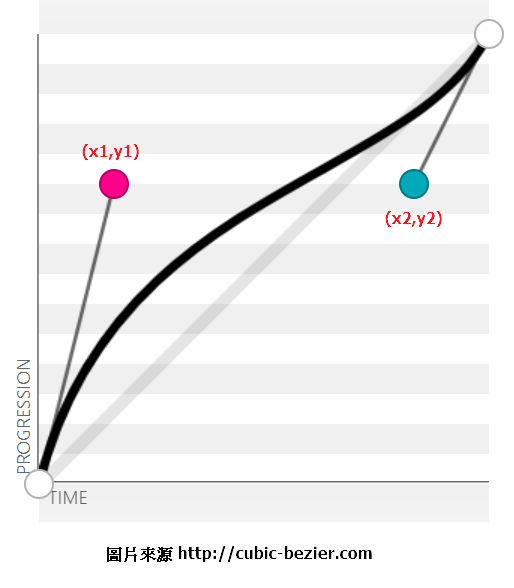

一、CSS3 transition Property
<!DOCTYPE html> <html> <head> <style> div { width: 100px; height: 100px; background: red; transition-property: width; transition-duration: 3s; transition-delay: 0.5s; transition-timing-function: linear; } div:hover { width: 300px; } </style> </head> <body> <p><b>Note:</b> This example does not work in Internet Explorer 9 and earlier versions.</p> <div></div> <p>Hover over the div element above, to see the transition effect.</p> </body> </html>
transition通常都是跟hover配合的，上例表示<div>被hover時，
從原本的width=100px在兩秒內變成300px。
1、transition-property
transition-property此屬性可以特別指定哪一個屬性可以被作用，
例如：transition-property: width;，代表width屬性將被納入transition效果、
transition-property也可以指定多組屬性，如transition-property: width, height;，
代表width與height屬性將被納入transition效果。
transition-property的預設值是all或是不指定transition-property，代表所有屬性都納入transition的作用中。
而所有屬性都不納入transition的作用則寫為transition-property : none;
2、transition-duration
用來指定transition的作用時間，預設值為0秒，代表沒有transition效果。
transition-duration也可根據transition-property所設定的多組屬性，相對應地設定多組時間。
3、transition-delay
表示transition效果要延遲多少秒才開始作用。
例如：transition-delay : 2s;
4、transition-timing-function
<!DOCTYPE html> <html> <head> <style> div { width: 100px; height: 50px; background: red; color: white; font-weight: bold; -webkit-transition: width 2s; /* Safari */ transition: width 2s; } /* For Safari 3.1 to 6.0 */ #div1 { -webkit-transition-timing-function: linear; } #div2 { -webkit-transition-timing-function: ease; } #div3 { -webkit-transition-timing-function: ease-in; } #div4 { -webkit-transition-timing-function: ease-out; } #div5 { -webkit-transition-timing-function: ease-in-out; } /* Standard syntax */ #div1 { transition-timing-function: linear; } #div2 { transition-timing-function: ease; } #div3 { transition-timing-function: ease-in; } #div4 { transition-timing-function: ease-out; } #div5 { transition-timing-function: ease-in-out; } div:hover { width: 300px; } </style> </head> <body> <p><b>Note:</b> This example does not work in Internet Explorer 9 and earlier versions.</p> <div id="div1">linear</div> <div id="div2">ease</div> <div id="div3">ease-in</div> <div id="div4">ease-out</div> <div id="div5">ease-in-out</div> <p>Hover over the div elements above, to see the different transition effects.</p> </body> </html>
用來決定transition的速度曲線ease是預設值，樣式參考下表。
| Value | Description |
|---|---|
| ease | Default value. Specifies a transition effect with a slow start, then fast, then end slowly (equivalent to cubic-bezier(0.25,0.1,0.25,1)) |
| linear | Specifies a transition effect with the same speed from start to end (equivalent to cubic-bezier(0,0,1,1)) |
| ease-in | Specifies a transition effect with a slow start (equivalent to cubic-bezier(0.42,0,1,1)) |
| ease-out | Specifies a transition effect with a slow end (equivalent to cubic-bezier(0,0,0.58,1)) |
| ease-in-out | Specifies a transition effect with a slow start and end (equivalent to cubic-bezier(0.42,0,0.58,1)) |
| cubic-bezier(x1,y1,x2,y2) | Define your own values in the cubic-bezier function. Possible values are numeric values from 0 to 1 |
| initial | Sets this property to its default value. Read about initial |
| inherit | Inherits this property from its parent element. Read about inherit |
cubic-bezier曲線

5、shorthand簡寫
<!DOCTYPE html> <html> <head> <style> div { width: 100px; height: 100px; background: red; transition: width 2s linear 1s; } div:hover { width: 300px; } </style> </head> <body> <p><b>Note:</b> This example does not work in Internet Explorer 9 and earlier versions.</p> <div></div> <p>Hover over the div element above, to see the transition effect.</p> </body> </html>
transition的屬性值格式為
transition: {property} {duration} {timing-function} {delay|initial|inherit};
另外可設定多組屬性
<!DOCTYPE html> <html> <head> <style> div { width: 100px; height: 100px; background: red; transition: width 2s linear 1s,background 2s linear 1s; } div:hover { background: yellow; width: 300px; } </style> </head> <body> <p><b>Note:</b> This example does not work in Internet Explorer 9 and earlier versions.</p> <div></div> <p>Hover over the div element above, to see the transition effect.</p> </body> </html>
參考資料：